Problem
How might we develop a digital platform for Cambodian American digital creators that caters to the needs of both existing and emerging Cambodian American small businesses, and generates new forms of engagement?
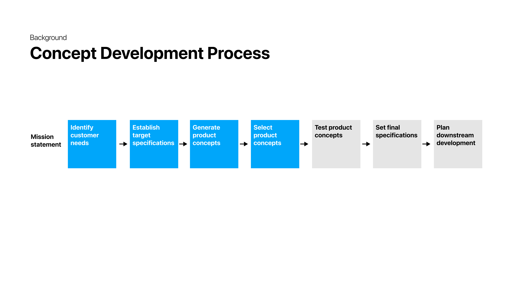
Data analysis
I first used quantitative data analysis to understand how well Cambodian-American businesses were performing on digital place-search platforms.
Used Python and Google Places API to scrape data for businesses in study area
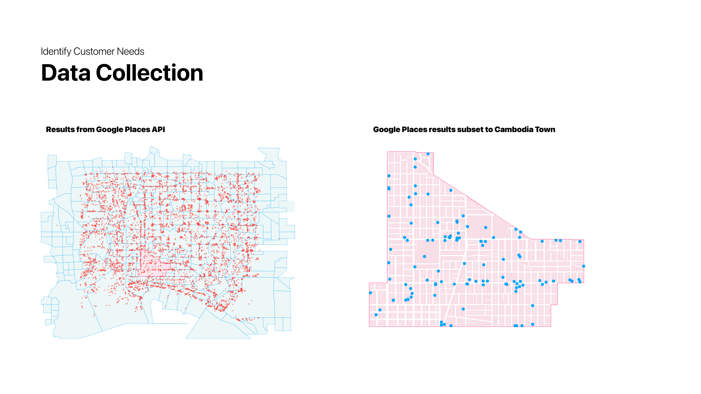
Compared Google Maps rating performance of businesses in Cambodia Town compared to businesses in surrounding area
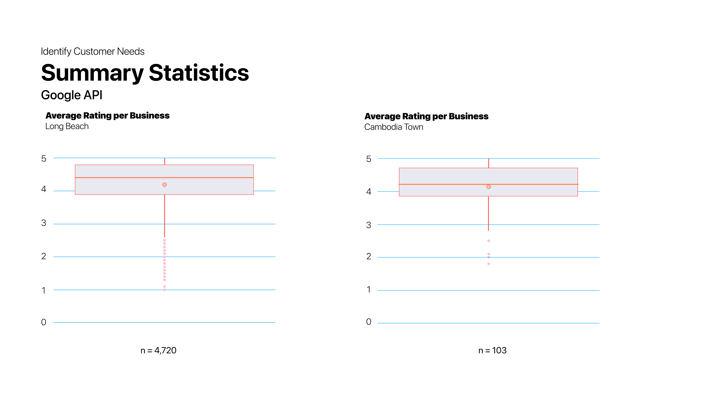
Conducted a similar process, this time using Python and Yelp API, which offered additional variables for analysis

Used a Welch's t-test on the Yelp data to see if there is a statistically significant difference between Cambodian and non-Cambodian restaurants in terms of their performance on Yelp

User research
I conducted in-depth interviews with 9 potential users of the mobile app. Interview participants were a mix of digital creators and consumers.
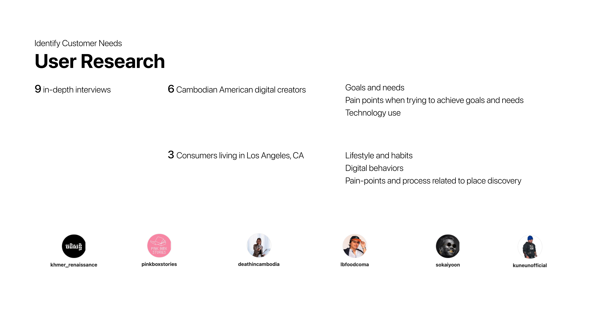
From my interviews I developed user personas to highlight key needs and characteristics
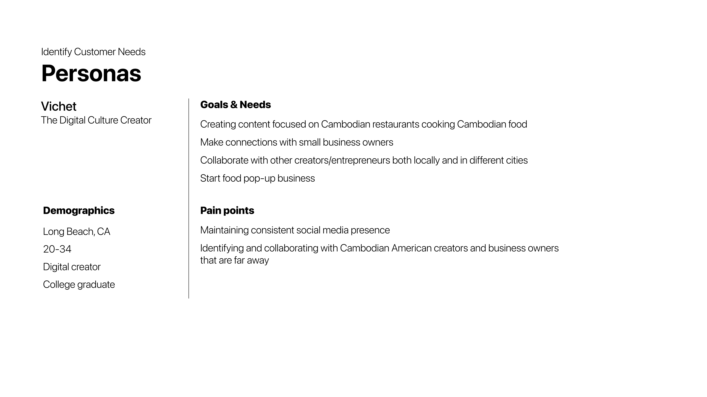

For each persona, I constructed a journey map that outlines the major steps each user segment takes to accomplish specific goals.


I mapped user needs from in-depth interviews onto core features of the mobile app

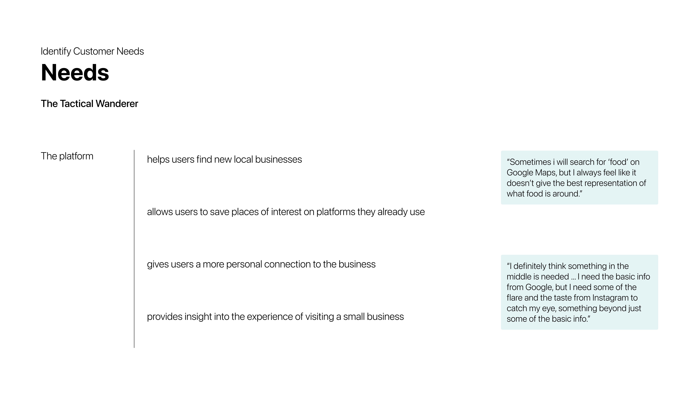
I conducted a competitive analysis to determine how well competitors are meeting key user needs, and to identify white space opportunities

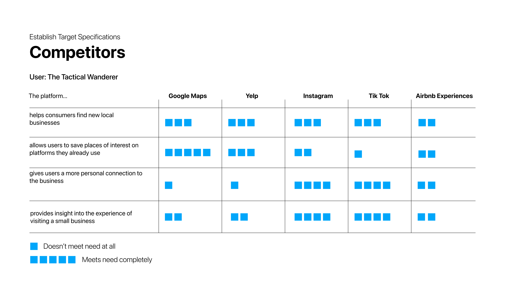


 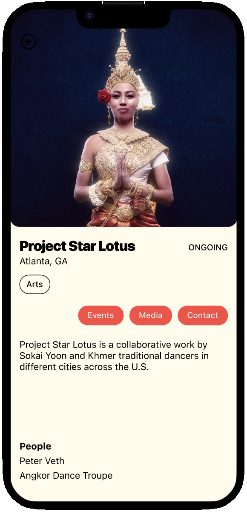
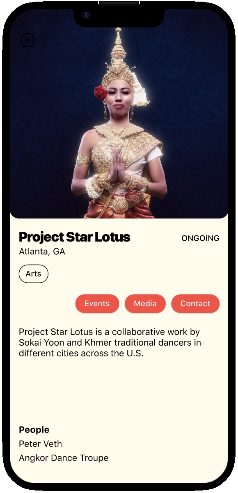
 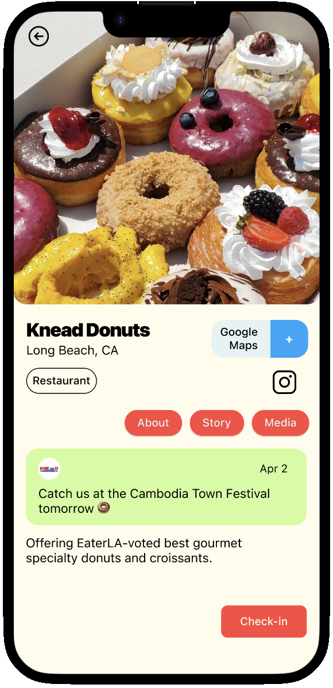
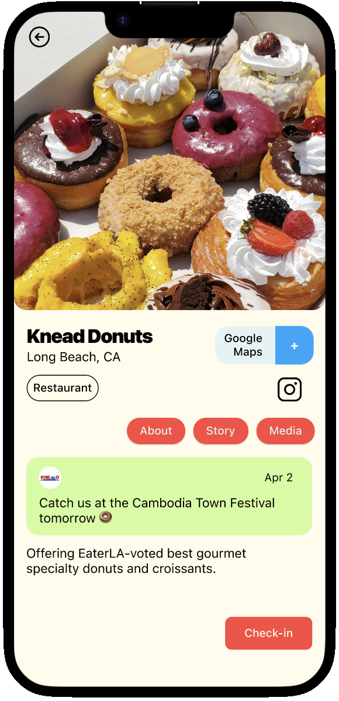

 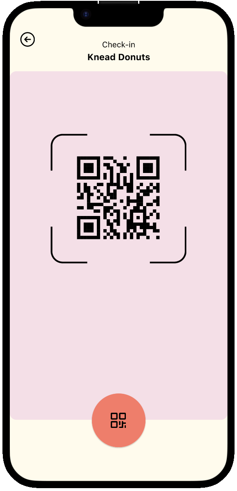
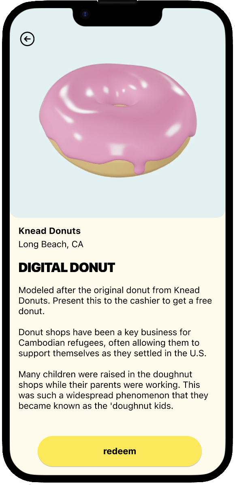
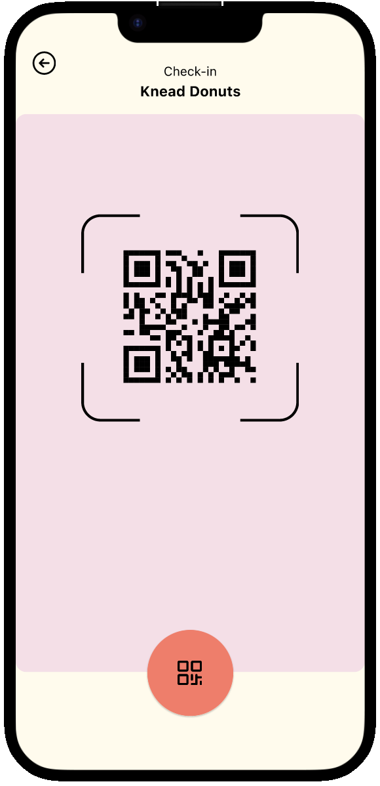
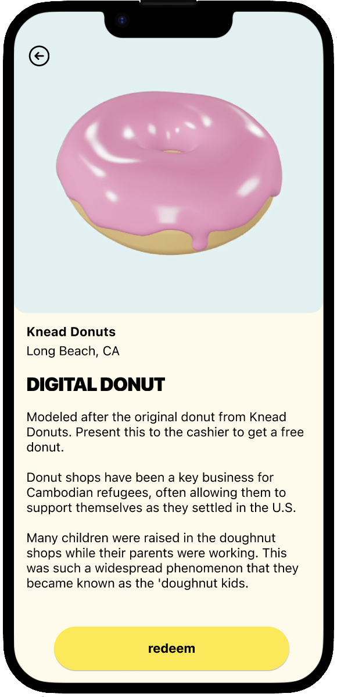